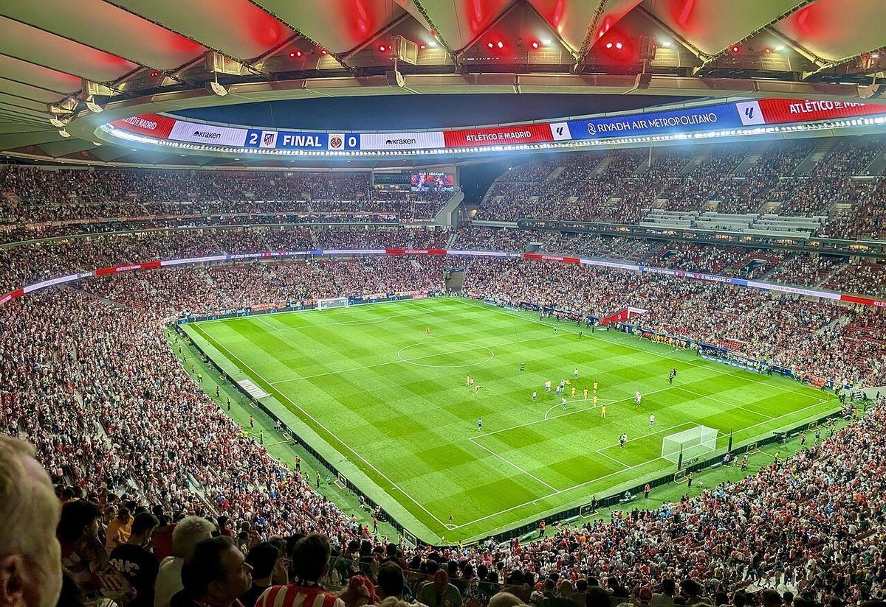

Англия вдесятером обыграла Испанию 3:2 в Мадриде и заняла первое место в группе Лиги наций
Кейн, Конса и Уайт забили до удаления Эллиота Андерсона, и англичане удержали победу, прервав 43-матчевую беспроигрышную серию Испании.

Что произошло
Сборная Англии обыграла Испанию 3:2 на «Метрополитано» в Мадриде в воскресенье, 15 ноября 2026 года, и заняла первое место в группе A3 Лиги наций УЕФА. Поражение прервало беспроигрышную серию чемпионов мира из 43 матчей, сообщило агентство Press Association.
Гарри Кейн вывел Англию вперёд в компенсированное время первого тайма, реализовав пенальти после фола Пау Кубарси. В начале второго тайма Эзри Конса на 53-й минуте замкнул головой угловой Деклана Райса, а через четыре минуты Бен Уайт после передачи Моргана Роджерса сделал счёт 3:0.

Последние полчаса англичане играли вдесятером. На 63-й минуте Эллиот Андерсон был удалён за фол на Ламине Ямале в положении последнего защитника. Через две минуты Микель Ойарсабаль реализовал пенальти, а на 75-й минуте вышедший на замену Нико Уильямс замкнул передачу Ямаля.
Как Англия удержала победу
Вратарь Джеймс Траффорд, которому отдали предпочтение перед Джорданом Пикфордом, в концовке сделал несколько сейвов, сообщает Sky Sports, в том числе двойной сейв после ударов Фермина Лопеса и Ойарсабаля в добавленное время.
Почему это важно

Победа выводит сборную Англии Томаса Тухеля в четвертьфинал Лиги наций с первого места в группе, поэтому при жеребьёвке она будет посеяна. По данным Sky Sports, жеребьёвка пройдёт в пятницу, 20 ноября, а двухматчевые четвертьфиналы состоятся в конце марта 2027 года.
Главные факты
- Счёт: Испания — Англия 2:3.
- Голы Англии: Кейн, 45-я минута (пенальти); Конса, 53-я; Уайт, 57-я.
- Голы Испании: Ойарсабаль, 65-я (пенальти); Нико Уильямс, 75-я.
- Удаление: Эллиот Андерсон (Англия), 63-я минута.
- Стадион: «Метрополитано», Мадрид.